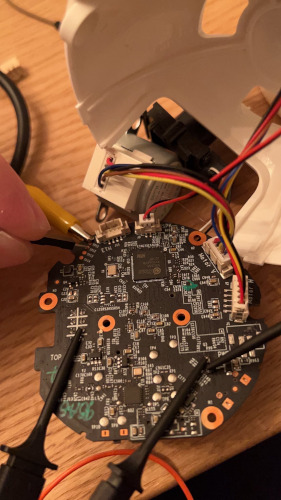

I decided I wanted to start looking into IP cameras and this one was relatively cheap and had good reviews so I figured it was a good place to start.
After opening the camera up and inspecting the board I found some copper test points that vaguely look like they might be uart and next to it some port labeled ETH so maybe ethernet? I tried connecting an alligator clip to flash chip in order to dump flash but I continuously kept getting “chip is blank” so either I don’t know how to hook up the chip or there is something stopping me from dumping flash. So I guess it was back to seeing if those test pins were uart or not. I did some connectivity tests and determined one to be ground (TP13) which was a good start. I connected my uart cable to a ground elsewhere on the board, powered on the board and then held the RX wire onto each of the other test points until TP11 started printing text. So I was able to read the uart but I cannot type and hold two wires on the RX and TX so I got and clip onto the uart TX and then booted the camera up. Then whenever I wanted to send a command I manually held the TX wire to the RX test point (TP12).

I also accidentally pulled the power off of the board so I had to manually hook them up to power the device.
Now that I got a shell I was able to view running processes and netstat so that I can figure out what I want to start looking into.
root@EC70:/# ps
PID USER VSZ STAT COMMAND
1 root 1280 S /sbin/procd
2 root 0 SW [kthreadd]
3 root 0 SW [ksoftirqd/0]
4 root 0 SW [kworker/0:0]
5 root 0 SW< [kworker/0:0H]
6 root 0 SW [kworker/u2:0]
7 root 0 SW [rcu_preempt]
8 root 0 SW [rcu_sched]
9 root 0 SW [rcu_bh]
10 root 0 SW< [lru-add-drain]
11 root 0 SW [watchdog/0]
12 root 0 SW [kdevtmpfs]
13 root 0 SW< [netns]
14 root 0 SW [kworker/u2:1]
147 root 0 SW [oom_reaper]
148 root 0 SW< [writeback]
150 root 0 SW [kcompactd0]
151 root 0 SW< [crypto]
152 root 0 SW< [bioset]
154 root 0 SW< [kblockd]
178 root 0 SW [kworker/0:1]
179 root 0 SW< [cfg80211]
181 root 0 SW< [watchdogd]
204 root 0 SW [kswapd0]
279 root 0 SW [irq/59-GPIO66]
289 root 0 DW [ehci_monitor]
301 root 0 SW [urdma_tx_thread]
324 root 0 SW [kworker/0:2]
328 root 0 SW< [bioset]
333 root 0 SW< [bioset]
338 root 0 SW< [bioset]
343 root 0 SW< [bioset]
348 root 0 SW< [bioset]
353 root 0 SW< [bioset]
358 root 0 SW< [bioset]
363 root 0 SW< [bioset]
368 root 0 SW< [bioset]
373 root 0 SW< [bioset]
378 root 0 SW< [bioset]
389 root 0 SW [monitor_temp]
401 root 0 SW< [kworker/0:1H]
404 root 0 SWN [jffs2_gcd_mtd5]
475 root 812 S /sbin/ubusd
476 root 992 S /bin/ash --login
980 root 1328 S /sbin/ledd
1052 root 2628 S /sbin/wirelessd
1059 root 2232 S /sbin/utplogd
1069 root 0 SW [RTW_CMD_THREAD]
1089 root 0 SW [SensorIfThreadW]
1100 root 0 SW [IspDriverThread]
1118 root 0 SW [kworker/u2:2]
1249 root 10892 S /usr/bin/timed -f
1262 root 26640 S /usr/bin/media-service -f
1277 root 17336 S /usr/bin/storaged -f
1295 root 3188 S /usr/bin/alarm_delivery -f
1316 root 3468 S /usr/bin/camScheduled
1365 root 6740 S /usr/bin/relayd
1379 root 2676 S /usr/bin/ucloud
1397 root 2808 S /usr/bin/ulinkied
1438 root 0 DWN [mi_log]
1439 root 0 DW [vif0_P0_MAIN]
1440 root 0 DW [vif1_P0_MAIN]
1441 root 0 DW [vpe0_P0_MAIN]
1442 root 0 DW [vpe0_P1_MAIN]
1443 root 0 DW [vpe0_P2_MAIN]
1444 root 0 DWN [VEP_DumpTaskThr]
1449 root 0 DW [venc0_P0_MAIN]
1450 root 0 DW [venc1_P0_MAIN]
1453 root 0 SW [RGN BUF WQ]
1459 root 0 DW [ai0_P0_MAIN]
1503 root 8376 S /usr/bin/speaker
1521 root 19768 S /usr/bin/detection -f
1549 root 1440 S hostapd /etc/hostapd.conf -B
1573 root 988 S udhcpc -p /var/run/udhcpc-br-lan.pid -s /lib/netconf
1583 root 0 DW [divp0_P0_MAIN]
1669 nobody 852 S /usr/sbin/dnsmasq -C /var/etc/dnsmasq.conf -k -x /va
1885 root 988 R ps
root@EC70:/#
root@EC70:/# netstat -peanut
Active Internet connections (servers and established)
Proto Recv-Q Send-Q Local Address Foreign Address State PID/Program name
tcp 0 0 0.0.0.0:17443 0.0.0.0:* LISTEN 1277/storaged
tcp 0 0 0.0.0.0:18443 0.0.0.0:* LISTEN 1503/speaker
tcp 0 0 0.0.0.0:10443 0.0.0.0:* LISTEN 1397/ulinkied
tcp 0 0 0.0.0.0:9999 0.0.0.0:* LISTEN 1397/ulinkied
tcp 0 0 127.0.0.1:8081 0.0.0.0:* LISTEN 1503/speaker
tcp 0 0 0.0.0.0:19443 0.0.0.0:* LISTEN 1262/media-service
tcp 0 0 0.0.0.0:53 0.0.0.0:* LISTEN 1669/dnsmasq
tcp 0 0 127.0.0.1:25175 0.0.0.0:* LISTEN 1295/alarm_delivery
tcp 0 0 127.0.0.1:8088 0.0.0.0:* LISTEN 1277/storaged
netstat: /proc/net/tcp6: No such file or directory
udp 0 0 0.0.0.0:9999 0.0.0.0:* 1397/ulinkied
udp 0 0 0.0.0.0:53 0.0.0.0:* 1669/dnsmasq
udp 0 0 0.0.0.0:67 0.0.0.0:* 1669/dnsmasq
udp 0 0 0.0.0.0:68 0.0.0.0:* 1573/udhcpc
netstat: /proc/net/udp6: No such file or directory
Afterwards I connected the Kasa app to the device and it asked to update the firmware and the uart printed the url where the firmware came from which is nice. Download Link
After connecting the camera to the app and the internet here are the ps and netstat results:
root@EC70:/# ps
PID USER VSZ STAT COMMAND
1 root 1280 S /sbin/procd
2 root 0 SW [kthreadd]
3 root 0 SW [ksoftirqd/0]
4 root 0 SW [kworker/0:0]
5 root 0 SW< [kworker/0:0H]
6 root 0 SW [kworker/u2:0]
7 root 0 SW [rcu_preempt]
8 root 0 SW [rcu_sched]
9 root 0 SW [rcu_bh]
10 root 0 SW< [lru-add-drain]
11 root 0 SW [watchdog/0]
12 root 0 SW [kdevtmpfs]
13 root 0 SW< [netns]
14 root 0 SW [kworker/u2:1]
147 root 0 SW [oom_reaper]
148 root 0 SW< [writeback]
150 root 0 SW [kcompactd0]
151 root 0 SW< [crypto]
152 root 0 SW< [bioset]
154 root 0 SW< [kblockd]
178 root 0 SW [kworker/0:1]
179 root 0 SW< [cfg80211]
181 root 0 SW< [watchdogd]
204 root 0 SW [kswapd0]
280 root 0 SW [irq/59-GPIO66]
283 root 0 SW< [bioset]
294 root 0 DW [ehci_monitor]
306 root 0 SW [urdma_tx_thread]
329 root 0 SW [kworker/0:2]
333 root 0 SW< [bioset]
338 root 0 SW< [bioset]
343 root 0 SW< [bioset]
348 root 0 SW< [bioset]
353 root 0 SW< [bioset]
358 root 0 SW< [bioset]
363 root 0 SW< [bioset]
368 root 0 SW< [bioset]
373 root 0 SW< [bioset]
378 root 0 SW< [bioset]
383 root 0 SW< [bioset]
394 root 0 SW [monitor_temp]
406 root 0 SW< [kworker/0:1H]
409 root 0 SWN [jffs2_gcd_mtd5]
481 root 816 S /sbin/ubusd
482 root 992 S /bin/ash --login
1234 root 0 SW [RTW_CMD_THREAD]
1425 root 1328 S /sbin/ledd
1462 root 2688 S /sbin/wirelessd
1474 root 2236 S /sbin/utplogd
1558 root 0 SW [SensorIfThreadW]
1569 root 0 SW [IspDriverThread]
1604 root 0 SW [kworker/u2:2]
1642 root 1228 S wpa_supplicant -D nl80211,wext -i wlan0 -b br-lan -c
1700 root 10892 S /usr/bin/timed -f
1713 root 0 SW< [bioset]
1714 root 0 SW [mmcqd/0]
1719 root 26644 S /usr/bin/media-service -f
1743 root 20012 S /usr/bin/storaged -f
1763 root 3188 S /usr/bin/alarm_delivery -f
1780 root 3472 S /usr/bin/camScheduled
1823 root 6820 S /usr/bin/relayd
1835 root 2852 S /usr/bin/ucloud
1861 root 2836 S /usr/bin/ulinkied
1876 root 4532 S /usr/bin/p2pd
1956 root 0 DWN [mi_log]
1972 root 0 DW [vif0_P0_MAIN]
1976 root 0 DW [vif1_P0_MAIN]
1978 root 0 DW [vpe0_P0_MAIN]
1979 root 0 DW [vpe0_P1_MAIN]
1981 root 0 DW [vpe0_P2_MAIN]
1985 root 0 DWN [VEP_DumpTaskThr]
1989 root 0 DW [venc0_P0_MAIN]
1991 root 0 DW [venc1_P0_MAIN]
2009 root 0 SW [RGN BUF WQ]
2013 root 0 DW [ai0_P0_MAIN]
2158 root 988 S udhcpc -p /var/run/udhcpc-br-lan.pid -s /lib/netconf
2168 root 8392 S /usr/bin/speaker
2194 root 19768 S /usr/bin/detection -f
2266 root 0 DW [divp0_P0_MAIN]
2884 root 988 R ps
root@EC70:/#
root@EC70:/# netstatimed (1748): drop_caches: 3
t -peanut
Active Internet connections (servers and established)
Proto Recv-Q Send-Q Local Address Foreign Address State PID/Program name
tcp 0 0 127.0.0.1:25175 0.0.0.0:* LISTEN 1763/alarm_delivery
tcp 0 0 127.0.0.1:8088 0.0.0.0:* LISTEN 1743/storaged
tcp 0 0 127.0.0.1:929 0.0.0.0:* LISTEN 1876/p2pd
tcp 0 0 0.0.0.0:17443 0.0.0.0:* LISTEN 1743/storaged
tcp 0 0 0.0.0.0:18443 0.0.0.0:* LISTEN 2168/speaker
tcp 0 0 0.0.0.0:10443 0.0.0.0:* LISTEN 1861/ulinkied
tcp 0 0 0.0.0.0:9999 0.0.0.0:* LISTEN 1861/ulinkied
tcp 0 0 127.0.0.1:8081 0.0.0.0:* LISTEN 2168/speaker
tcp 0 0 0.0.0.0:19443 0.0.0.0:* LISTEN 1719/media-service
tcp 0 0 192.168.1.155:42516 52.6.210.145:443 TIME_WAIT -
tcp 0 0 192.168.1.155:46084 52.6.127.145:443 ESTABLISHED 1835/ucloud
netstat: /proc/net/tcp6: No such file or directory
udp 0 0 192.168.1.155:57764 8.8.8.8:53 ESTABLISHED 1835/ucloud
udp 0 0 192.168.1.155:45124 192.168.1.1:53 ESTABLISHED 1719/media-service
udp 0 0 192.168.1.155:45916 8.8.8.8:53 ESTABLISHED 1719/media-service
udp 0 0 192.168.1.155:50016 8.8.8.8:53 ESTABLISHED 2168/speaker
udp 0 0 192.168.1.155:35565 192.168.1.1:53 ESTABLISHED 1861/ulinkied
udp 0 0 192.168.1.155:51571 192.168.1.1:53 ESTABLISHED 1743/storaged
udp 0 0 192.168.1.155:49145 192.168.1.1:53 ESTABLISHED 1835/ucloud
udp 0 0 192.168.1.155:51582 8.8.8.8:53 ESTABLISHED 1861/ulinkied
udp 0 0 192.168.1.155:54665 8.8.8.8:53 ESTABLISHED 1823/relayd
udp 0 0 192.168.1.155:41225 192.168.1.1:53 ESTABLISHED 2168/speaker
udp 0 0 192.168.1.155:39310 192.168.1.1:53 ESTABLISHED 1823/relayd
udp 0 0 0.0.0.0:9999 0.0.0.0:* 1861/ulinkied
udp 0 0 192.168.1.155:42642 8.8.8.8:53 ESTABLISHED 1743/storaged
netstat: /proc/net/udp6: No such file or directory
The first ps had hostapd and dnsmasq running and the second ps had wpa_suplicant and p2pd running, everything else appears to be the same. p2pd file does not exist on the filesystem before the firmware update which is interesting…
An nmap from the wifi shows these ports open which confirms what we saw in the netstat:
PORT STATE SERVICE
9999/tcp open abyss
10443/tcp open unknown
17443/tcp open unknown
18443/tcp open unknown
19443/tcp open unknown